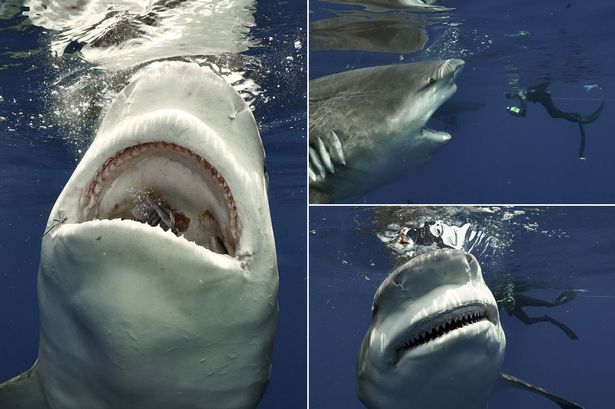

'World's first Covid patient' who vanished from Wuhan a year ago still missing
A Chinese scientist who vanished after she was dubbed 'the world's first Covid patient' is still missing despite a year-long manhunt amid fears of a state cover-up.
Huang Yanling was named as Patient Zero in early online reports shared widely throughout China last February, when the magnitude of the deadly virus was first coming to light.
The researcher, who worked at the Wuhan Institute of Virology is thought to have been the first to contract Covid in autumn 2019, before it was officially acknowledged.
The claims suggested a link between the pandemic and the institute - which houses zoonotic bat diseases - and sparked fears the bug had been accidentally leaked during experiments.
State officials and lab agents were quick to rubbish the reports at the time and remove them from the internet.
They claimed Huang was safe and had simply moved jobs, with a Chinese news agency even claiming to have spoken her new employer.
But China is yet to produce the scientist physically despite numerous requests from the US State Department to stop hiding information.
Their reluctance has fuelled the theory she is either dead or being held by the state to cover up the institute’s role in the pandemic, reports the Mail on Sunday.
The country is now under mounting pressure to reveal conclusive evidence of Huang's whereabouts and the true origins of the pandemic.
A post claiming to be from the scientist later appeared on the WeChat messaging service telling colleagues she was alive and claiming the reports were false.
It read: 'To my teachers and fellow students, how long no speak.I am Huang Yanling, still alive.If you receive any email [regarding the Covid rumour], please say it’s not true.'
But since then Huang appears to have disappeared from social media and there is no longer any mention of her name on the institute's website.
'Beijing continues today to withhold vital information that scientists need to protect the world from this deadly virus and the next one,' Secretary of State Mike Pompeo added on Saturday.
Pompeo also revealed new studies from the US intelligence claim that scientists at the Wuhan Institute of Virology fell ill in the autumn of 2019 - earlier than previously believed - with symptoms consistent with Covid.
Meanwhile Donald Trump has vowed to declassify bombshell secret intelligence linking the virus to the science facility in a bid to prove China is to blame.
'This raises questions about the credibility of WIV senior researcher Shi Zhengli's public claim that there was 'zero infection' among WIV's staff and students of SARS-CoV-2 or SARS-related viruses,' Pompeo said.
He spoke after a US government official said the most 'credible' theory around the origin of coronavirus is that is escaped from the lab in Wuhan.
Trump's senior aide Matthew Pottinger claimed leaders in China are 'admitting' there is a chance theories suggesting Covid-19 started in a 'wet market' are false.
Pompeo has suggested the virus is a natural one which escaped from the lab by accident rather than a man-made one.
But he called on the World Health Organisation (WHO) to investigate the lab in question just one day after a team from the organisation landed in Wuhan.
The team is set to look into the 'wet market' originally linked to early infections, but there are believed to be no plans to investigate whether the virus accidentally escaped from the lab.
A briefing document from the State Department read: 'Accidental infections in labs have caused several previous virus outbreaks in China and elsewhere, including a 2004 SARS outbreak in Beijing that infected nine people, killing one.'
Posted On: 2021-01-17T14:59:54
Posted By: Nina Lloyd

Content Date: 2021-01-17
Download Date: 2021-05-13
Document ID: L0C04C2G4